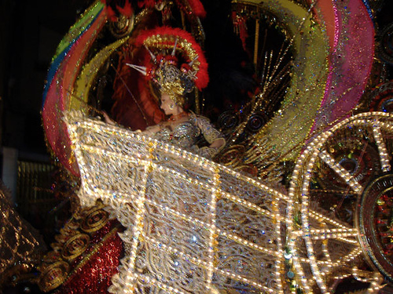

Le carnaval de Santa Cruz de Tenerife
Le carnaval de Santa Cruz de Tenerife (en espagnol : Carnaval de Santa Cruz de Tenerife) est une fête populaire organisée dans la ville de Santa Cruz de Tenerife, capitale de l’île de Tenerife (archipel des Canaries, Espagne). Il est déclaré « Fiesta de Interés Turístico Internacional » en 1980[1]. Le programme comprend une période de concours (notamment murgas, comparsas et rondallas), la gala d’élection de la reine, ainsi que des événements de rue (défilés, concerts, bals) dont le « Grand Coso » et l’« enterrement de la sardine » (Entierro de la Sardina)
